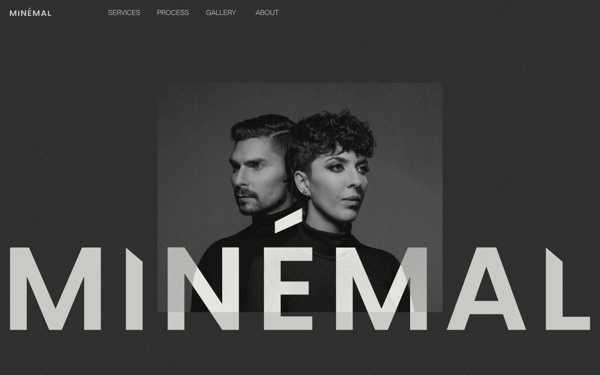
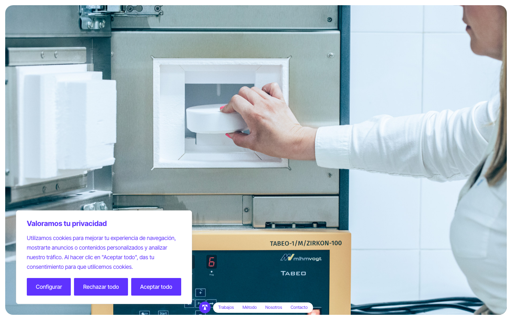
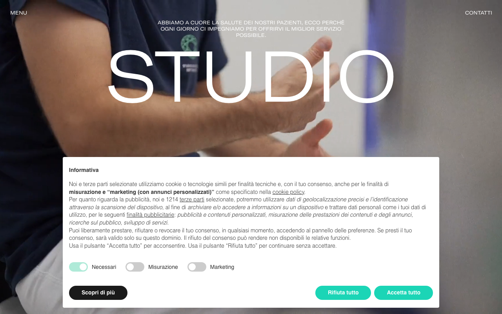

Trei referințe pentru Dent Design Concept
Toate trei sunt site-uri stomatologice reale, premiate pe Awwwards, fotografiate
de mine la 1280px pe 20.09.2026. Alege una — de la ea pornesc cele trei direcții de hero
din Trecerea 0. Nu se copiază; se preia ADN-ul vizual.
A
MINÉMAL Dental Aesthetics
Evgenii Astapov · Honorable Mention · minemal.dental

- Ce face
- Wordmark monumental care iese din ecran pe jos, cu un portret alb-negru stratificat astfel încât literele trec prin fața și prin spatele imaginii. Fundal grafit uniform, zero alb clinic.
- Ce iau
- Stratificarea tipografie-imagine ca semnătură, disciplina de a avea un singur element pe primul ecran, fotografia de portret tratată cu ochi de editorial de modă.
- Ce nu iau
- Aerul de brand de lux impersonal. Un cabinet de cartier de 21 de ani nu e o casă de modă.
Test de amprentă: trece lejer, 5 din 5. Niciun rând din
registru nu are hero cu tipografie monumentală tăiată de cadru, niciunul nu e pe fundal închis
uniform, niciunul nu stratifică text și imagine. Dar intră în conflict cu
site-premium, care cere „light, Apple-like". Dacă o alegi, o alegi știind
că e o abatere deliberată.

- Ce face
- Fotografie reală de proces, fără filtru și fără wash: mâini, cuptor de zirconiu, tehnician la lucru. Navigația e o pilulă lipită de marginea de jos, nu de sus. Accent violet, rar.
- Ce iau
- Meseria arătată în loc de zâmbetul de stoc. Navigația jos — dimensiune complet neconsumată în registrul tău. Onestitatea imaginii: lumină de cabinet, nu studio.
- Ce nu iau
- Hero-ul care e doar fotografie, fără nicio afirmație. Un prospect trebuie să înțeleagă în trei secunde unde a ajuns.
Test de amprentă: trece, 4 din 5, dar cu o atingere.
„Fotografie reală full-bleed" e consumat de Aquadent. Diferența e reală — Aquadent are wash
aproape opac și titlu centrat peste, aici nu există niciunul — dar e diferența cea mai subțire
dintre cele trei. Dacă o alegi, navigația jos devine obligatorie ca separator.

- Ce face
- Video full-bleed cu medicul la lucru, peste care stă cuvântul „STUDIO" într-un display ultra-subțire, lat cât ecranul. Deasupra, o frază în majuscule mici, centrată. Paletă desaturată cu un verde mentă.
- Ce iau
- Contrastul dintre o literă foarte subțire la scară foarte mare și fotografia caldă dedesubt. Eleganța italiană fără ornament.
- Ce nu iau
- Titlul centrat peste imagine. Și bannerul de cookie-uri care acoperă jumătate din hero — exact ce nu facem.
Test de amprentă: pică, 2 din 5. Hero full-bleed cu
titlu centrat peste imagine e fix amprenta consumată de Aquadent, iar „tipografic, ultra-subțire,
centrat" e aproape de Professional Dental Care. O recomand doar dacă îți place atât de mult
atmosfera încât acceptăm să reconstruim structura complet în jurul ei.